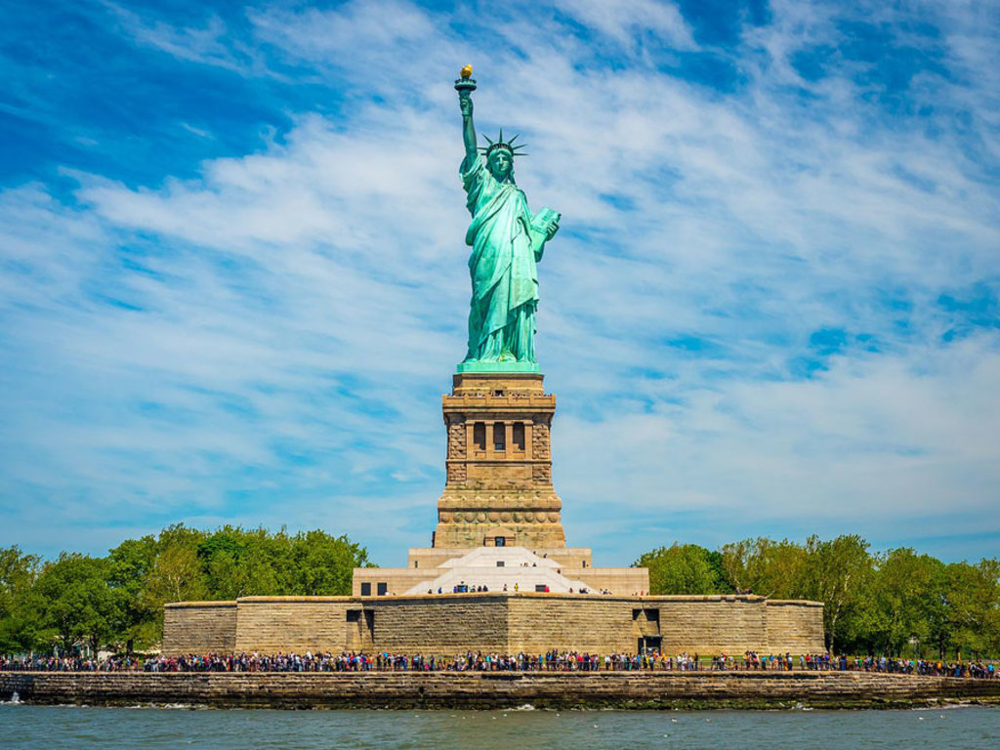
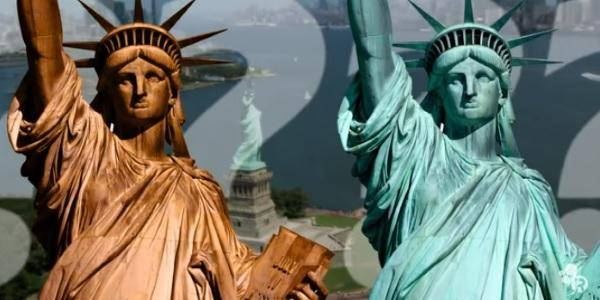

Uno dei monumenti piu' conosciuti al mondo, situata all'entrata del porto sul fiume Hudson al centro della baia di Manhattan
 Quale e' il suo significato?
Quale e' il suo significato?
La fiaccola rappresenta il fuoco eterno della liberta', le catene spezzate ai piedi simboleggiano la fine del potere della monarchia, le punte della corona sono i sette mari e i sette continenti e la tavoletta che regge nella mano detsra riporta la data del 4 luglio 1776, la data dell'indipendenza americana.

Fu donata dalla Francia agli Stati Uniti in occasione dei festeggiamenti per i cento anni della dichiarazione di indipendenza. Data importante perche' segna l'inizio della storia della nazione.
Quando e' stata costruita?
Fu costruita a partire dal 1875, a Parigi e successivamente spedita negli Stati Uniti nel 1885. Ci vollero nove anni per completare la costruzione, alla fine dei lavori l'opera contava 350 pezzi.
 Colore originale:La statua e' realizzata in rame ed era di un brillante colore rossastro/marrone, cambio' il suo colore in verde-blu nel corso dei due decenni successivi.
